PPT Master는 Claude Code에 붙여 쓰는 무료 오픈소스(MIT)예요. PDF·워드·웹 페이지·붙여 넣은 글을 주고 한 문장으로 부탁하면, 파워포인트에서 제목·글상자·도형을 하나씩 눌러 고칠 수 있는 .pptx 파일을 내 컴퓨터에 만들어 줘요. '차트도 숫자를 고칠 수 있게'라고 한 줄 적으면 차트가 파워포인트 기본 차트로 들어가서, 숫자만 바꿔도 막대가 따라 바뀌어요.
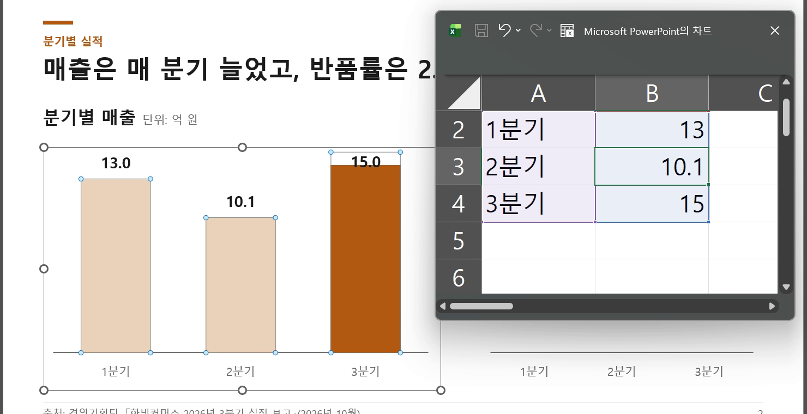
아직 없다면 Claude Code부터 깔아요. 윈도우는 PowerShell에 아래 'Claude Code 설치' 한 줄을 붙여 넣고, 다 되면 터미널에서 claude를 실행해 클로드 계정으로 로그인해요. 맥은 공식 안내의 한 줄을 쓰세요. 공식 설치 안내: https://code.claude.com/docs/ko/setup
터미널을 열고 아래 '설치 명령'을 차례로 붙여 넣어요. ppt-master 폴더가 생기고, 필요한 파이썬 부품이 깔려요(마지막에 'Successfully installed …'가 나오면 끝). Git이 없으면 깃허브 페이지에서 Code → Download ZIP으로 받아 압축을 푼 뒤 그 폴더에서 pip 줄만 실행해요.
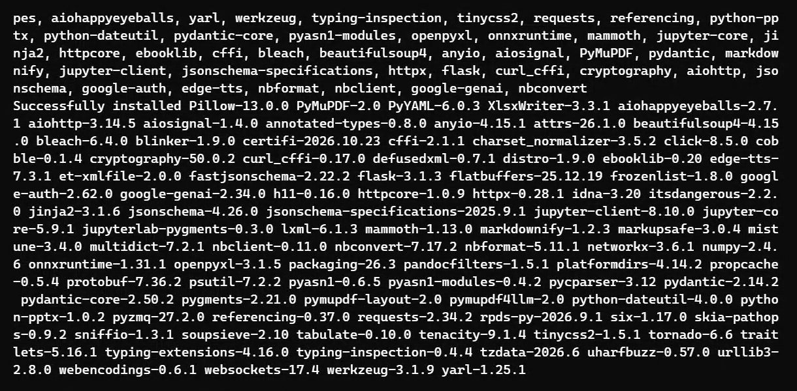
ppt-master 폴더 안 projects 폴더에 새 폴더(예: hanbit)를 만들고 PDF를 넣어요. 저희는 projects/hanbit/report.pdf에 넣었어요. 파일 탐색기로 옮겨도 되고, 터미널이면 아래처럼요.
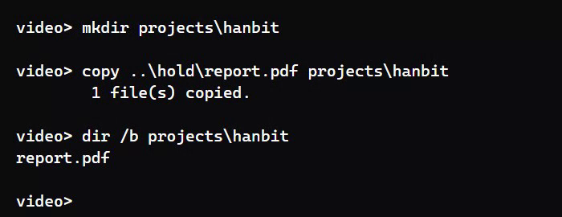
터미널에서 ppt-master 폴더로 들어가 claude를 실행하고, 아래 '발표 자료 요청 문장'을 파일 경로만 바꿔 보내요. '확인 없이 바로'를 빼면 장 수·디자인을 먼저 물어보고 만들어요. 넣을 수 있는 자료는 PDF·워드(.docx)·웹 페이지·채팅창에 붙여 넣은 글이에요(공식 설명 기준 — 저희는 PDF로 돌려 봤어요). 회의 메모처럼 파일이 없으면 아래 '붙여 넣은 글로 만들기'처럼 글을 바로 붙여 넣으면 돼요. '차트도 숫자를 고칠 수 있게 해 줘'는 꼭 넣으세요 — 이 한 줄이 있어야 차트가 숫자를 고칠 수 있는 파워포인트 차트로 나와요(아래 '파워포인트에서 고치기').
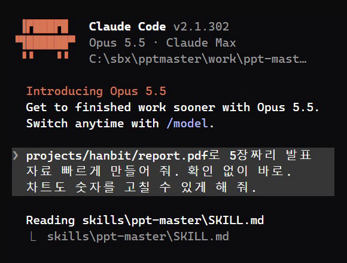
다 되면 projects 안에 '<이름>_<날짜>' 폴더가 생기고, 그 안 exports 폴더에 .pptx가 있어요. 차트 한 줄을 넣었을 땐 파일 이름 끝이 _native_charts_tables.pptx예요. 저희는 5장짜리가 약 10분 걸렸어요. 마지막 답에 장마다 무엇을 넣었는지, 그리고 '확인해 주실 점'(직접 계산해 넣은 숫자 등)이 적혀 나와요 — 꼭 읽으세요.
파일을 파워포인트로 열면 제목·글상자·도형이 전부 따로 눌려요. 묶음(그룹)으로 들어간 것도 있어서, 한 번 누르면 묶음이, 한 번 더 누르면 그 안 글상자가 잡혀요. 글자는 그대로 지우고 다시 쓰면 돼요.
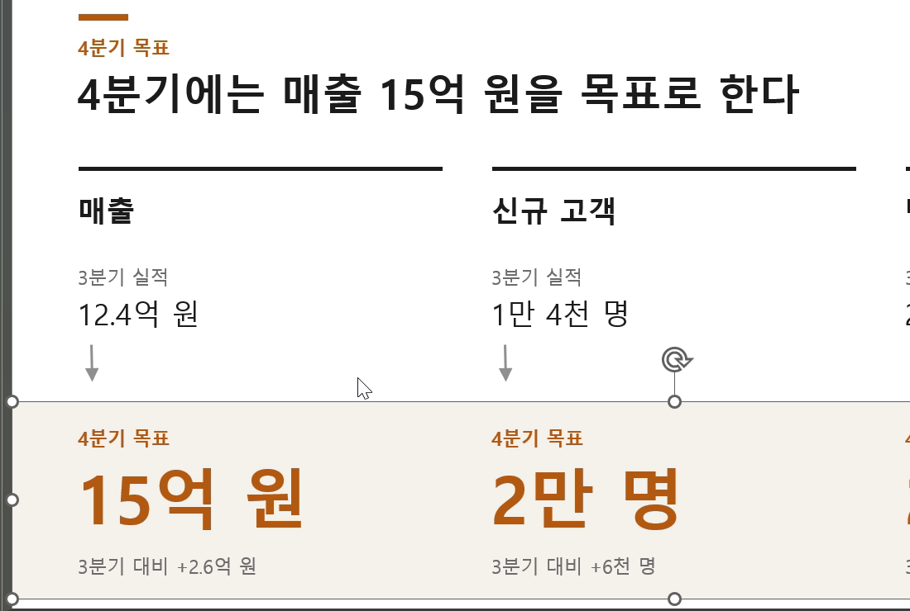
차트를 오른쪽 클릭 → '데이터 편집'을 누르면 작은 표 창이 열려요. 칸 숫자를 바꾸고 엔터를 치면 막대와 위 숫자 라벨이 바로 따라 바뀌어요. 단, 차트 밖에 따로 적힌 글자(슬라이드 제목 속 숫자, 도넛 가운데 큰 숫자 등)는 같이 안 바뀌니 직접 고쳐요.
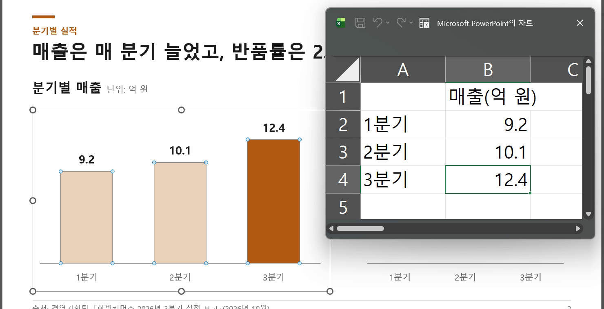
몇 군데만 고칠 거면 파워포인트에서 직접 고치는 게 가장 빨라요. 구성을 크게 바꾸고 싶으면 요청 문장에 장 수, 꼭 넣을 숫자, 강조할 내용을 더 적어 새로 만들어요(결과 파일 이름에 만든 시각이 붙어서 따로 저장돼요).
쓰기 좋은 때: 보고서·회의 자료·논문 PDF를 발표용으로 옮길 때, 표 숫자를 차트로 바꿔야 할 때, 만든 뒤에도 계속 손볼 자료일 때. 안 맞는 때: 디자인을 한 번에 완벽하게 받아야 할 때(공식 설명도 '한 번에 완벽하진 않다'고 해요), 숫자를 확인할 시간이 없을 때, 회사 밖으로 내보내면 안 되는 자료(내용이 AI 모델로 보내져요).
가상 회사 '한빛커머스'의 3분기 실적 보고 PDF 2쪽(분기별 매출·반품률 표, 품목 비중, 주요 활동, 4분기 목표)을 넣고 위 요청 문장을 그대로 보냈어요.
표지(3분기 매출 12.4억 원 강조) → 분기별 매출 막대·반품률 꺾은선 차트 → 품목 비중 도넛과 주요 활동 → 4분기 목표 → 4분기 계획. 매출·반품률 차트는 숫자를 고칠 수 있는 파워포인트 차트로 들어갔어요.
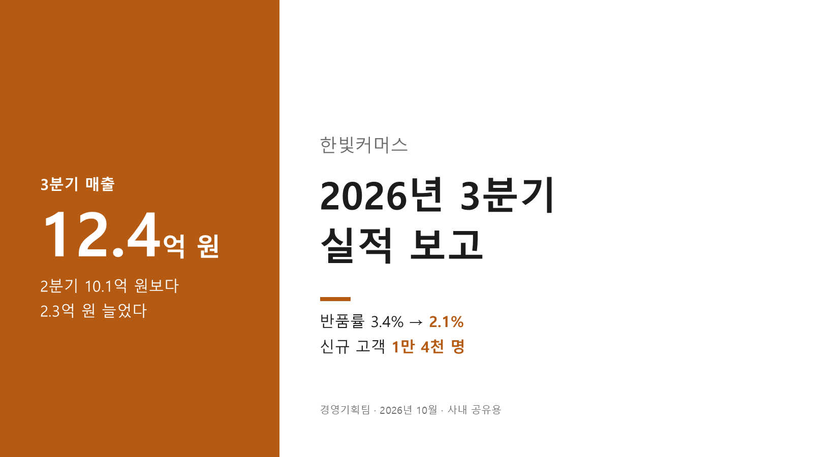
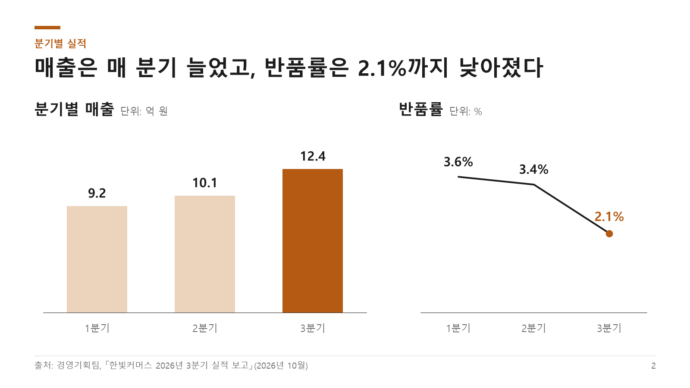
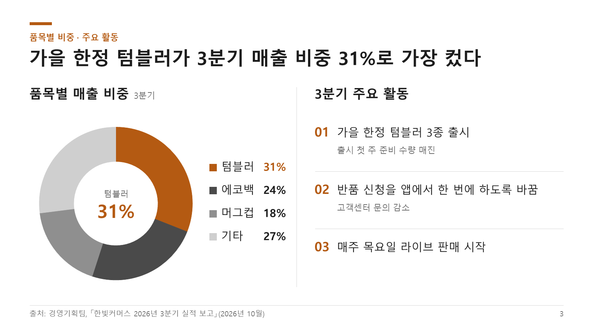
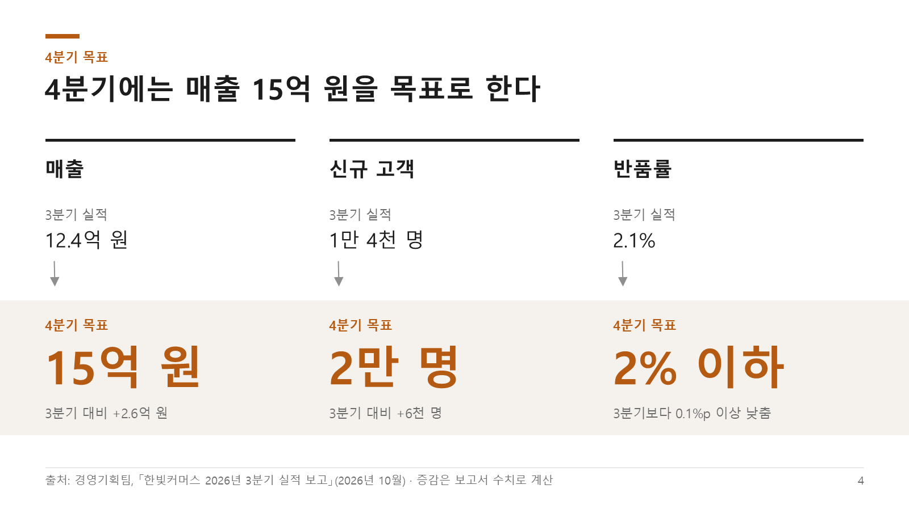
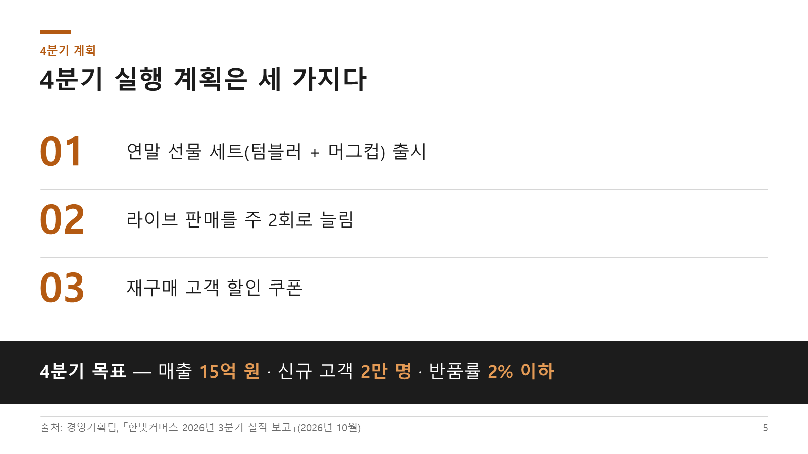
답 끝 '확인해 주실 점'에 두 가지가 있었어요. ① PDF를 글자로 바꿀 때 표의 소수점이 빠져 9.2가 92로 읽혔는데, 원본 PDF를 그림으로 열어 바로잡았다고 적었어요. ② 자료에 없는 숫자를 몇 개 계산해 넣었다고 밝혔어요(표지 '2.3억 원 늘었다', 4장 '+2.6억 원·+6천 명·0.1%p'). 계산은 맞았지만, 이런 숫자는 원래 자료와 한 번 더 맞춰 보세요.
처음 한 번 — 맥·리눅스는 공식 안내 code.claude.com/docs/ko/setup
irm https://claude.ai/install.ps1 | iex
처음 한 번, 터미널에서
git clone https://github.com/hugohe3/ppt-master.git cd ppt-master pip install -r requirements.txt
ppt-master 폴더에서 claude를 실행한 뒤 (경로·장 수만 바꾸기)
projects/hanbit/report.pdf로 5장짜리 발표 자료 빠르게 만들어 줘. 확인 없이 바로. 차트도 숫자를 고칠 수 있게 해 줘.
파일 없이 메모·회의록을 바로 붙여 넣을 때
아래 내용으로 발표 자료 만들어 줘. 차트도 숫자를 고칠 수 있게 해 줘. (여기에 메모를 붙여 넣기)
'확인 없이 바로'를 빼면 먼저 물어봐요
projects/hanbit/report.pdf로 발표 자료 만들어 줘. 차트도 숫자를 고칠 수 있게 해 줘.
도움이 되셨다면
@ai.antenna.kr
에서 바로 쓰는 AI 활용법을 계속 올립니다.